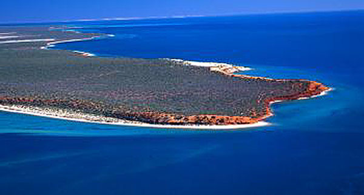
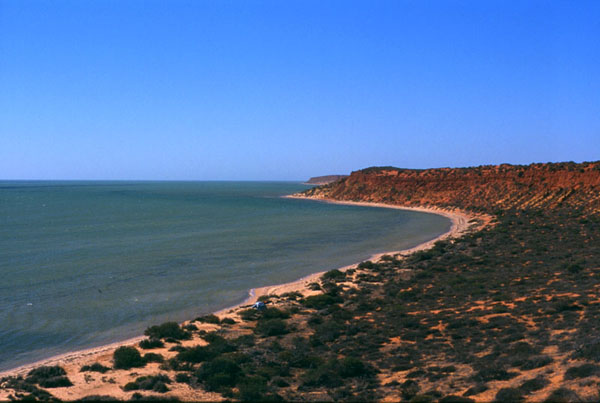

|
Shark Bay - Paddling in a Fishbowl
A sea kayak adventure in Shark Bay, Western Australia
In late March 2003, Sandy and I traveled to beautiful waters of Shark Bay for a 9-day sea kayak adventure (shortened from planned 12 due in part to very favorable winds). We have a Feathercraft "folding" double sea kayak. "Folding is a bit of a misnomer: it has a rubber and Cordura skin over an aluminum and plastic frame, and it disassembles into two large bags/backpacks. Where in the world is Shark Bay? Shark Bay is on the west coast of Western Australia, about half way up (location map). That is a long way from here. Our travel time from Nelson to Shark Bay was 52 hours; we enjoyed ourselves in a truck, on 3 planes, and 2 buses. The classic movies on the Greyhound were a highlight not to be missed. Full details of our journey are here for the incurably curious. Calling it a "Bay" is understated as it is a really big place: roughly speaking it is 200 km north-south by 125 km east-west split into two equal sized bays by the narrow Peron Peninsula (local map).  Cape Peron at the northern tip of Peron Peninsula An aquarium and a desert Shark Bay, like much of central coast of Western Australia, is a land of tremendous contrast. A thin band of white sand and sporadic red sand cliffs separates the Australian desert from the warm, clear waters of the Indian Ocean. The land is dominated by sand, scrub, sand, drought tolerant grasses, sand, and dry salt lake beds (locally called "birridas"). Oh, and lots of red sand. Contrasting the hot dry desert of the land, the waters of Shark Bay, are alive with an awesome density of marine life. Some days we literally felt like we were paddling in a fish bowl. Shark Bay is a designated World Heritage Area, has some very unusual hyper-saline environments, is home to the world's largest concentration of dugongs as well as incredible numbers of rays, turtles, sea birds, fish, dolphins, and yes, sharks. Lots of sharks. Our boat is very quiet, which allows us to get very close to the animals before they detect us - and then we look like a 19-foot Tiger Shark, so we get to see how fast they can swim. As an added bonus, the dark nights and clear desert air combined to provide a spectacular night sky.
Evening on the beach in Bottle Bay Water, water everywhere, and not a drop to drink It is very, very arid in Shark Bay. It essentially doesn't rain unless there is a cyclone (Indian Ocean version of a hurricane). There is no surface water, so we had to carry or stash all that we would need - we estimated we could get by with 7 litres a day for the both of us. With our planned 12-day trip, that's 84 litres, and we figured we could carry about 20 litres in addition to all our food and gear, so we had about 70 litres we needed to stash along the way. The northern end of Peron Peninsula, around which we paddled, is an old sheep farming station (now Francois Peron National Park), and old roads criss-cross it; occasionally they head out to the coast, and these provided perfect locations to stash our water. The terrain isn't terribly rough, but the road surface ranged from very soft sand to extremely soft sand, so it was 4x4 travel only. We rented a 4-wheel drive pickup in Denham and had an exciting day burying our water containers in the sand at 4 locations. Driving in soft sand was a new experience for us, so there were a few lessons to be learned along the way. Our rental "ute" seemed to have about the same horsepower as our blender back home, and to compensate, I resorted to high speed - which made for some white-knuckle driving. Against all odds, we managed to deposit all our water stashes with only minor mishaps. Thinking we were "home and hosed" (as the Australians say), I let my guard down and promptly buried the truck up to its axles in soft sand. After an hour or so of ineffectual digging, a fisherman came along and pulled us out, saving us from a rather long, hot walk back to town. Off we go Our chosen route was from Denham to Monkey Mia, a distance of about 115 km. On the morning of April 1, we loaded up the kayak and headed north from Denham in the soon-to-be-familiar 20-40 km/hr SW tail wind. For the next few days we paddled in shallow water rarely over 1 meter deep - despite being up to 1 km from shore. The tail wind helped ease our out-of-shape middle-aged bodies into the paddling routine.  Camp 2, North of Cape Leseur
The water was warm and clear with ocassional sea grass beds; the shore was sandy beach with sporadic crumbling red sandstone cliffs. We soon noticed that we were not alone - countless rays, turtles, all manner of fish, and sharks darted about us at high speed. In the bay we selected for our first campground, Sandra counted about 50 sharks, so the place is aptly named. The sharks were reef sharks generally a metre or less in length, so posed no risk to us, but did provide endless entertainment. Another common sight were the Cormorants - the healthy fish populations support huge numbers of Cormorants. These birds seem to mostly just hang out on sand bars basking in the sun. In fact, they never seemed to ever fish. As amateur biologists, we declared them a distinct sub-species "Non-Fishing Cormorants" as we began to wonder if they were photosynthetic. In truth, I suspect that the fish life is so abundant, that they need only spend 5 minutes each morning and evening gorging themselves on fish, and then spend the rest of the day chin-wagging back on the sand bar.
Non-Fishing Cormorant colony
As we traveled further from Denham we began to see the graceful Manta Rays, dolphins, and a few huge Loggerhead (we think) turtles. And some larger "spotted" sharks. These interesting sharks turned out to be the feared Tiger Shark (good thing we didn't know that when they cruised by during swims). The land, parched and scrubby as it is, supports a surprising diversity of life: emus, kangaroos, lizards, feral sheep and goats. Solitude and fantastic paddling We found conditions nearly perfect for kayaking. Generally cloudless skies were a welcome change from the uncertain and changeable weather of Canada's Wet Coast. A stiff SW wind blew day and night: we were kept relatively cool and made good time in the day and bug-free at night. With the shallow water protected from the ocean, even the strong winds generated little more than a one to two foot chop, ideal for cowardly paddlers like ourselves. The tides were very small by Canadian standards (sometimes only 2 tides a day, and changes as small as 20 cm), so carries from kayak to camp were short. As icing on the cake, gorgeous sandy campsites with cliff walking or beachcombing opportunities could be found almost everywhere along the way. However, when the winds temporarily abated or we came ashore, it was hot. Very hot. Temperatures were in the low to mid 30s, and the sun was incredibly intense. The low scrub found onshore afforded no shade whatsoever, and many days would pass without the sun being obscured by clouds. By afternoon we often felt baked to a crisp and longed for some quality shade. Our only shelter was under our tent fly, but that was a very hot place when the wind relaxed its characteristic fury. Despite these overall great conditions, we saw only two other kayakers, and a few vehicles on land.
Goat skull We turn south and it is payback time, or is it? Cape Peron, and our northernmost point, is the meeting of two tidal currents - one from each major bay of Shark Bay, and we had been warned that the water there can be a bit squirrelly. Therefore, we tackled this section early in the day and with a certain amount of trepidation. As so often happens in these situations, it proved to be a non-event; in fact, our passage around Cape Peron was accomplished in some of the calmest water of the entire trip. Once the cape was rounded, however, that changed. We ran straight into a howling SE gale with rough water - our anticipated dues for the very favorable winds of the previous week. Our progress slowed from 6 km/hr to 1 or 2 km/hr even with increased effort. We made camp early this day and walked to the lighthouse near the cape and watched dolphins from atop seaside cliffs. After learning that a cyclone was approaching the Australian coast north of us, we pressed on the next day, but luck was with us as the wind dropped during the day. The following two days we couldn't believe our luck as the wind switched to blow from the north for the first time in the trip and pushed us to our pullout spot two days ahead of schedule. Even more luckily, Cyclone Indigo made landfall 500+ km north of us. A great trip that I could hardly recommend more enthusiastically to prospective paddlers. After this trip, we did some diving at Coral Bay, snorkeled with a 7 m Whale Shark, and then paddled Ningaloo Reef. Back to the top. |